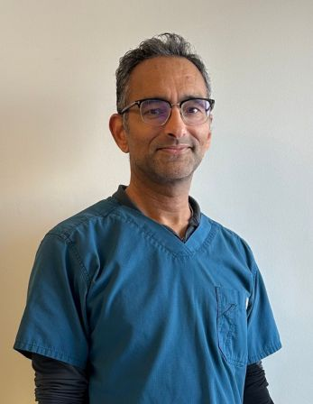
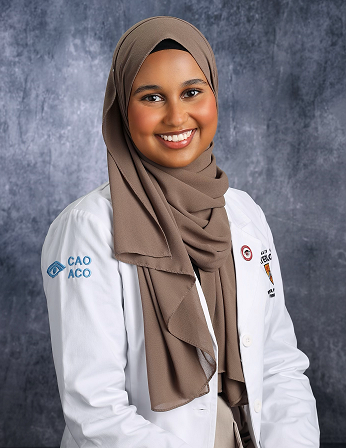

Whitby Eye Care
Trust a professional with your eyecare needs… Your eyes deserve an optometrist!
- Location 4091 Thickson Road North, Unit 2, Whitby
- Phone 905-655-6236
- Email info@whitbyeyecare.com
Our Services
What we offer
-
Eye exams
Eye Exams
A full eye examination that checks your prescription and the health of your eyes.
-
Eye exams
Adult & Senior Eye Exams
Annual comprehensive exams for adults and seniors, including screening for cataracts, glaucoma and macular degeneration.
-
Eye exams
Children’s Eye Exams
Gentle, thorough eye exams for babies, pre-schoolers and school-age children.
-
Eye exams
MTO and Police Eye Exams
Occupational vision testing and paperwork for driving, policing and other job requirements.
-
Contact lenses
Contact Lens Fitting
Fitting, training and free trial lenses for new and experienced contact lens wearers.
-
Dry eye
Dry Eye Testing
Diagnostic testing for dry eye disease, with IPL and radiofrequency treatment in the clinic.
-
Dry eye
BlephEx Treatment
A painless in-office eyelid cleaning that clears the bacteria and debris behind blepharitis.
-
Eye health
OCT Testing
Non-invasive scanning that shows the detailed layers of your retina and optic nerve.
-
Eye health
Management of Eye Disease
Monitoring and care for diabetic eye disease, glaucoma, macular degeneration and cataracts.
-
Vision correction
Laser Vision Correction
Consultations that work out whether laser surgery suits your eyes, and which procedure fits.
-
Eye health
Computer Related Eye Strain
Advice and office lenses for the headaches and dry eyes that come with screen work.
-
Eyewear
Prescription Eyewear and Safety Glasses
Frames, lenses, lens treatments and safety eyewear dispensed and fitted in the clinic.
About Us
Why choose us
Dr Fernando (optometrist), and his eye care team strive to provide you with the highest level of eye care services and products in an environment that is caring, positive, pleasant, and professional. We are located in Whitby, Ontario serving surrounding areas such as Oshawa, Ajax, Scarborough and Pickering. Our complete eye health examinations test both your visual and ocular health. Visual deficiencies in young children can result in strabismus (crossed eyes), amblyopia (lazy eye) or focusing difficulties, and adults and seniors need to be tested for cataracts, glaucoma, macular degeneration, retinal detachment and several other conditions we assess in our routine examination. Many visual problems can be corrected with glasses, contact lenses, or laser vision correction. Whether you want a spectacular new look with one of our designer frames or designer sunglasses, or the latest innovations in contact lens technology, our experienced and knowledgeable eye team will be there for your personalized fitting.
Book Appointment- Member of Optometric Services Inc. Canada’s largest network of optometrists, giving our patients a large selection of frames and lenses, excellent quality at competitive pricing, state-of-the-art examination technology and personalized follow-up.
- Certified in the use of ocular therapeutics Our optometrists are certified in the use of ocular therapeutics, which means they can prescribe medications to treat eye infections and other eye conditions.
- Providing optometry services in Durham Region since 2002
- Serving Whitby, Oshawa, Ajax, Pickering, Scarborough and Durham Region We are located in Whitby, Ontario, serving surrounding areas such as Oshawa, Ajax, Scarborough and Pickering.
- Designer frame and eyewear brands Oakley, Guess, Coach, Boss, Vera Wang, Marciano, Fysh, Evatik, EasyClip, Jill Stuart, Barcelona and Jim.
- Cash, credit card and debit card accepted
Our Team
Meet the practitioners
-

Dr. Raniero Fernando
Optometrist
New England College of Optometry, Boston; certified in the use of ocular therapeutics
Dr. Raniero Fernando completed his undergraduate studies in molecular biology at the University of Toronto, then attended the New England College of Optometry in Boston, MA. During his studies he was a member of VOSH, providing volunteer optometric care in underserviced areas in Mexico. He is certified in the use of ocular therapeutics. Dr. Fernando has been providing optometry services in Durham Region since 2002.
-
Dr. Andrea Chan
Optometrist
Bachelor of Science, University of Waterloo (2002); New England College of Optometry; recipient of the VSP award for clinical excellence
Dr. Andrea Chan was born and raised in the Greater Toronto area. She earned her Bachelors of Science at the University of Waterloo in 2002. She continued her education in Boston, Massachusetts at the New England College of Optometry. Upon graduation she was the recipient of the VSP award for clinical excellence. During her time there she completed several internships focusing on areas such as pediatrics and ocular disease. Dr. Chan joined the practice in 2007 and is fluent in Cantonese.
-
Dr. Hajra Naeem
Optometrist
Doctor of Optometry, University of Waterloo (2023)
Dr. Hajra Naeem completed her undergraduate studies at UOIT before receiving her Doctor of Optometry degree at the University of Waterloo in 2023. During her externships, she provided comprehensive care to patients of all ages and found a particular interest in managing Dry Eye Disease. Dr. Naeem is happy to be serving her community and can do your eye exam in English, Urdu or Hindi.
-

Dr. Sumeya Mao
Optometrist
Doctor of Optometry, University of Waterloo (2024)
Dr. Sumeya Mao studied at Ontario Tech University before earning her Doctor of Optometry degree from the University of Waterloo in 2024. She completed several internships with local optometrists, managing ocular diseases, and assisted an ophthalmologist with pre- and post-op laser treatment procedures. She is passionate about providing eye care for all ages.
Products
What we carry
-
Contact Lenses
Whether you are looking for contact lenses for those special occasions, for everyday wear, or to add a little colour to your eyes, we have your lenses. We carry all the major brands as well as custom order lenses, with no charge for exchanges of unused boxes, no charge follow-up visits for problems related to lenses purchased at our office, big savings with manufacturer rebate offers and convenient direct shipping to your home.
-
Sunglasses
A large collection of sunglasses and eyeglasses from top brands, in prescription and non-prescription, to suit your needs and your personality.
-
Dry Eye Relief
Eye drops and dry eye relief products for patients in Whitby, Oshawa and Ajax, recommended by our optometrists.
FAQ
Frequently asked questions
How often should I have an eye exam?
Most adults should have an eye exam every 1 to 2 years. If you have vision problems, a family history of eye disease, or certain health conditions like diabetes, more frequent exams may be recommended by your optometrist.
How long does an eye exam take?
A standard eye exam usually takes about 30 to 60 minutes, depending on the complexity of the tests and whether you require additional evaluations, such as for contact lenses or eye conditions.
What do I need to bring with me for an eye exam?
Please bring your current eyeglasses or contact lenses, a list of medications you are taking, your health card or insurance information, and any questions or concerns you have about your vision or eye health.
Why is an eye test important?
Eye tests are essential not only for detecting changes in your vision but also for identifying early signs of eye conditions and systemic diseases such as diabetes, hypertension, and high cholesterol.
Why do I need more frequent eye tests if I’m diabetic?
Diabetes increases the risk of diabetic retinopathy and other eye complications. Regular eye exams help monitor changes and allow for early intervention to prevent vision loss.
Do I still need glasses if I get contact lenses?
Yes, it is recommended to have a backup pair of glasses even if you wear contact lenses regularly. Glasses give your eyes a break from contacts and are useful in case of irritation or emergencies.
When should my child have their first eye exam?
Children should have their first comprehensive eye exam between 6 and 9 months of age, another at 2 to 5 years old, and annually once they start school. Early detection is key to ensuring healthy visual development.
What does a comprehensive eye examination include?
A comprehensive exam evaluates vision sharpness, eye muscle function, pupil response, side vision, eye pressure, and the overall health of the eye using specialized equipment.
Do I need to wear my contact lenses to my contact lens appointment?
Yes, wearing your contact lenses to the appointment helps the optometrist assess the fit, comfort, and effectiveness of your lenses. Be sure to bring your lens case and solution as well.
What are the common signs of eye problems that I should watch out for?
Watch for symptoms like blurry vision, headache, eye pain, redness, flashes of light, floaters, double vision, or sudden vision loss. Seek prompt evaluation if any of these occur.
How can I reduce eye strain, especially when working on a computer?
Follow the 20-20-20 rule: every 20 minutes, look at something 20 feet away for 20 seconds. Adjust screen brightness, reduce glare, and ensure proper lighting and ergonomics.
What are the risk factors for conditions such as glaucoma, cataracts, and macular degeneration, and how can I lower my risk?
Risk factors include age, family history, smoking, UV exposure, and certain health conditions. Protect your eyes with sunglasses, eat a balanced diet rich in antioxidants, avoid smoking, and schedule regular eye exams for early detection.
Book an appointment
Book Appointment Call Now 905-655-6236 Reorder Contact Lenses